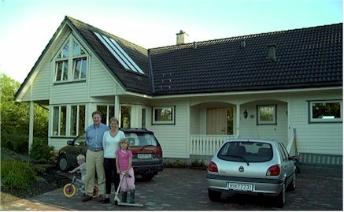 |
||
| This is Colin and Vigdis Kennedy's home, it's a beautiful home with lots of windows. I visited there two times. Colin and I used to work together in the Marketing group in Bartlesville. His children Kjartan (pronounced Shartan), Kaia, and Jarand (pronounced Yarand) were also fun and very nice to me. I didn't get Kjartan in any of my pictures here. | ||
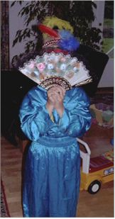 |
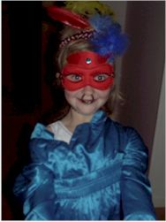 |
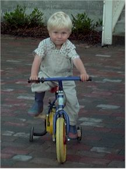 |
| Kaia gave me a fashion show while I was there |
Had a hard time getting a picture of Jarand, he
kept turning shy on me. |
|
| width="33%" valigntop"> 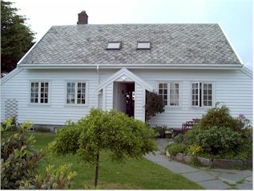 |
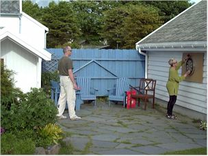 |
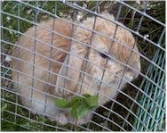 |
| This is the home of Eirik Braatvick. He's
a new friend that I have
been working with in Norway. Their home is a beautiful traditional-style
(Jaeren style?) house
which Eirik built himself with some help from relatives. His wife
Birgitt has also done a lot with the landscaping, there are nice flowers
everywhere.
Eirik's wife is Birgitt and he has three children: Anne-Margit,
Olav, and Borghild. The children couldn't understand me but were still very sweet
to me anyway. They tried to teach me how to count to 10 in Norwegian
but I'm a slow learner! |
We played darts out in front of their house with their son Olav. | This is their oldest daughter's bunny named Popcorn. It has been her pet for many years and will follow her around the yard like a little dog! |
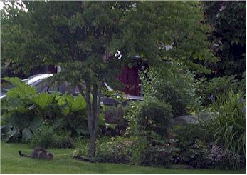 |
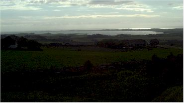 |
|
| This is part of their yard and the neighbor cat playing around. | This is the nice view from an old Viking burial mound just a few steps from Eirik's house | |
|
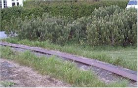 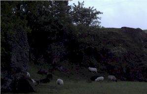 |
||
| Part of an iron circle in the ground near
Eirik's house - is left behind from an old German installation.
There used to be a big dish on it that transmitted signals to help the
planes navigate, the iron track was to allow it to move around. |
This picture didn't turn out, but I was trying to show the black sheep that are all around in this area. I can't remember ever seeing black sheep in the fields in the States. | |
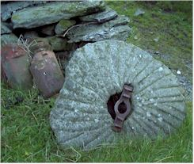 |
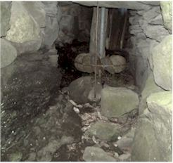 |
|
| Eirik took me on a drive around
the area. We went to the highest point in the area, where there were
two old stone monuments in the ground, marking where the people used to
gather back in ancient times. Then we went to this waterfall which
has the remains of an old mill. The pictures above are of a grinding
stone and looking back into one of the chutes where the grinding was done. |
||
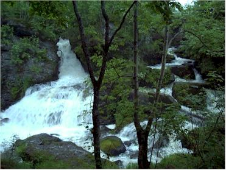 |
||
| A shot of the dual waterfalls - one is natural and one has cement "shelves" guiding the water down. | ||
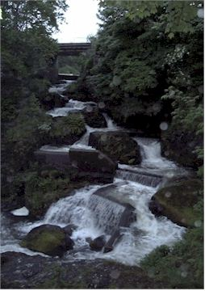 |
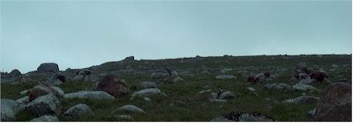 This is just a shot of what the fields looked like before they were cleared of rocks. These rocks were dropped out of the glaciers as they receded. Many were used to build fences, the others were buried into deep canals to make drainage systems. Lots of these rocks are very big so that must have been a huge task back then - they didn't even have a backhoe! |
|
| We also visited the house where this famous Norwegian poet Arne Garborg lived. They had carved a large stone into a likeness of his face and placed it there. Lots of Norwegians visit the spot to see where he wrote his poetry. | ||